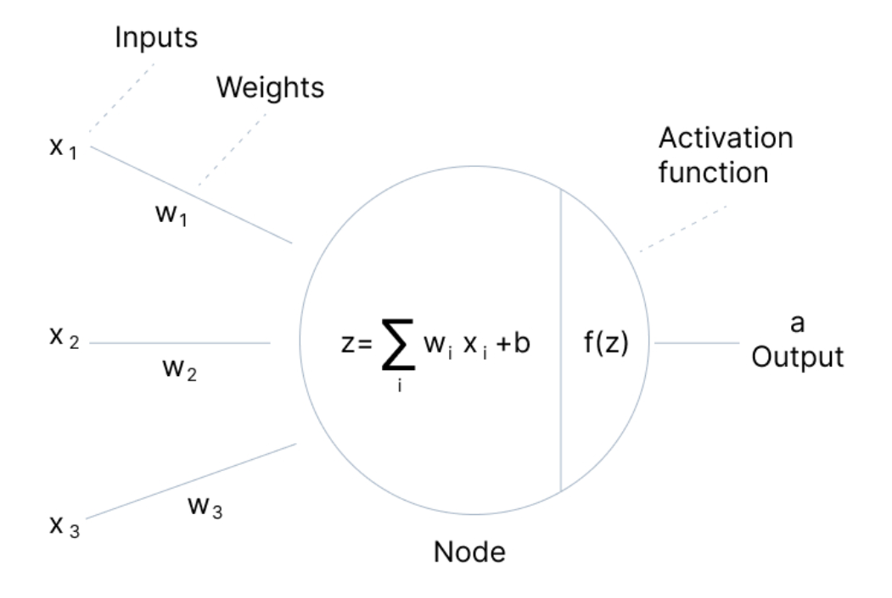
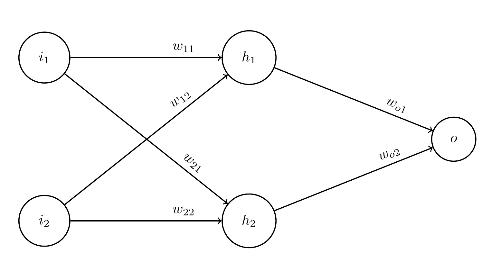

Machine Learning
Machine Learning
Machine learning is a field of artificial intelligence where statistical methods are used to train machines to perform tasks without explicit instructions.
In recent years, ML has made significant progress: AlphaGo, DALL E, ChatGPT, etc. Most of the recent progress has been attributed to deep neural networks.
Neural Networks
Neural networks are composed of layers of "neurons". Each neuron is a function that takes in a vector of inputs and outputs a scalar value.

Neural Networks
Each neuron/node takes a linear combination of all the results from the previous layer, optionally add some "bias", then applies an "activation function" to it which introduces nonlinearity.
Neural Networks
Some common activation functions:
- Sigmoid: $ \displaystyle f(x) = \frac{1}{1 + e^{-x}} $
- Hyperbolic tangent: $ \displaystyle f(x) = \tanh(x) = \frac{e^x - e^{-x}}{e^x + e^{-x}} $
- Rectified Linear Unit (ReLU): $ \displaystyle f(x) = \max(0, x) $
Neural Networks
Given a network shape and the corresponding weights and biases, a deep neural network has the potential to approximate any nonlinear function.
But how does a neural network learn? In other words, how to find the best weights $w_i$ and biases $b_i$?
Training Neural Networks
Given some training input and output data, the training of a neural network works by updating the network weights iteratively, minimizing the error on the output:
$$ w_i^{\mathrm{new}} = w_i^{\mathrm{old}} - a \frac{\partial \varepsilon}{\partial w_i} $$
This is called "gradient descent", which is almost identical to the "steepest descent" method we discussed in Lecture 28. However, here we choose the parameter $a$ instead of finding the optimal $a$.
The parameter $a$ is called the "learning rate".
Training Neural Networks
How to compute the partial derivatives $\partial \varepsilon / \partial w_i$?
The typical procedure is called "backpropagation". It uses the partial derivatives of intermediate steps to compute the partial derivative with respect to every weight.
Automatic Differentiation is the go-to method (Lecture 5) for computing and storing all the intermediate derivatives. It uses the chain rule repeatedly to compute the derivatives at every step, going backwards from the result to the original input.
Training Neural Networks
Let's work out a very simple network step by step to see how backpropagation works:
Training Neural Networks
The diagram describes the following mathematical expressions: $$ \begin{align} h_1 &= f(w_{11}i_1 + w_{12}i_2) \\ h_2 &= f(w_{21}i_1 + w_{22}i_2) \\ o &= f(w_{o1}h_1 + w_{o2}h_2) \end{align} $$
$f$ is the activation function we choose. We will use $f(x) = \tanh(x)$. I chose to not add any biases.
Training Neural Networks
The training error is often called the "loss function" or "cost function". A typical choice is the mean-squared error: $$ \varepsilon_\mathrm{MSE} = \sum_i \left(o_i - t_i\right)^2 $$
Since our network gives only one output, the error is simply $$ \varepsilon_\mathrm{MSE} = (o - t)^2 $$
Training Neural Networks
The partial derivatives with respect to the two final weights can be written as: $$ \frac{\partial \varepsilon}{\partial w_{o1}} = \frac{\partial \varepsilon}{\partial o} \frac{\partial o}{\partial w_{o1}} = \frac{1}{2}(o - t)h_1f'(w_{o1}h_1 + w_{o2}h_2) $$
$$ \frac{\partial \varepsilon}{\partial w_{o2}} = \frac{\partial \varepsilon}{\partial o} \frac{\partial o}{\partial w_{o2}} = \frac{1}{2}(o - t)\,h_2f'(w_{o1}h_1 + w_{o2}h_2) $$
Training Neural Networks
The partial derivatives with respect to earlier weights are slightly more involved: $$ \begin{align} \frac{\partial \varepsilon}{\partial w_{11}} &= \frac{\partial \varepsilon}{\partial o} \frac{\partial o}{\partial h_1}\frac{\partial h_1}{\partial w_{11}} \\ &= \frac{1}{2}(o - t)\,w_{o1}f'(w_{o1}h_1 + w_{o2}h_2)\,i_1f'(w_{11}i_1 + w_{12}i_2) \end{align} $$
Similar for other derivatives with respect to $w_{12}$, $w_{21}$, and $w_{22}$.
Training Neural Networks
Given a training data point with input $\{i_1, i_2\}$ and output target $t$, we run many epochs of backpropagation to minimize the mean-squared difference between the network output $o$ and the training target $t$: $$ w_i^{\mathrm{new}} = w_i^{\mathrm{old}} - a \frac{\partial \varepsilon_\mathrm{MSE}}{\partial w_i} $$
In practice, all the derivatives are automatically computed during network evaluation, which allow the backpropagation process simply using those stored derivatives.
Types of Learning
What we have discussed is "supervised learning", where the neural network learns a certain model by minimizing the error on the training data.
"Unsupervised learning" does not include a set of output data for the model to train on. Instead, the loss functions are often intrinsic statistical properties of the model. In the generative case of Large Language Models (LLM) or text-to-image models, the loss functions are often measured by how well the outputs from the model reproduces training input data.
"Reinforcement learning" trains through trial-and-error instead of direct backpropagation. It is often used with Monte Carlo methods where agents are simulate en masse to find the optimal decision-making process.
Software Packages
Nowadays many software frameworks for machine learning exist: Tensorflow, PyTorch, Keras, Caffe, etc.
GPUs are the main platform for training large models, due to their computational power and optimizations. The Nvidia GTC used to focus on graphics and computing. Now it's mostly AI!